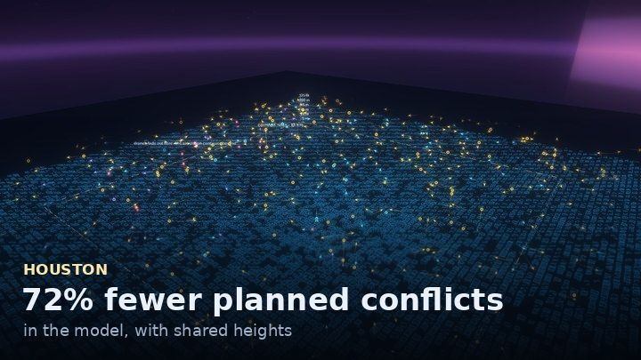
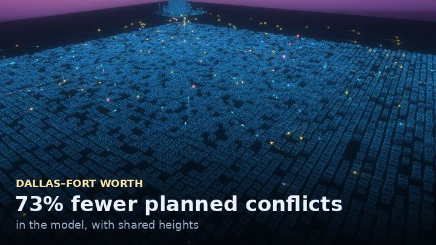
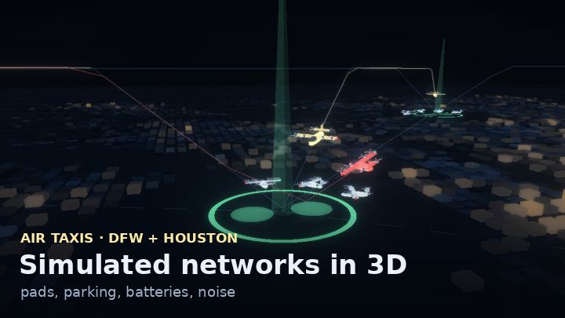

Three delivery companies.
One sky.
Delivery drones from three companies, flown together over Texas in a simulation built from their FAA filings. Open one and watch.

Houston

Dallas–Fort Worth

Air taxis
What this is
Wing, Zipline and Amazon have each filed plans with the FAA to fly delivery drones over the same Texas cities. This simulation flies those plans together, with no coordination between the companies, and counts planned conflicts: moments when two companies’ planned paths come within 30 m sideways and less than 10 m in height. Then it tests fixes. Some operators already share flight plans before take-off (a standard called ASTM F3548 covers this; I have not read it), so this measures how much each fix removes, not today’s risk. With a realistic plan-sharing check, 96–99% of the conflicts are removed either way, and height sharing roughly halves how many flights have to wait.
Drones and air taxis together: One landing site, two kinds of aircraft: a close-up replay of delivery drones and air-taxi take-offs at the Texas Medical Center helipad and Toyota’s Plano HQ.
Results: What the simulation found, and what it got wrong — charts, the scorecard of failed predictions, and how the work is done.
How sure is this? Two things matter most among those tested. Amazon’s return height is not public: if it flew home near the 400 ft (122 m) maximum its filings state (a secondhand staff remark), the cut would be about 29% (Houston) or 35% (DFW). And the shared-out heights are only 10–20 m apart: if companies needed 15 m between them, the cut would be about 55% (Houston) or 45% (DFW). The ranges do not cover the model’s own limits: straight-line routes, uncapped overlap areas and differences between simulation engines. With only the sites flying in Houston today, the plans almost never meet; the question is the build-out.
Since 22 Oct 2026 each study was written down and fingerprinted before it ran (four early studies are exceptions, listed on the findings page), and failed predictions stay in the record. The reviews so far were done by AI reviewers; no person outside the project has reviewed it yet. Run your own scenario in the Lab · About and how it was built · Code and study record: github.com/forgottenl5/shared-sky.